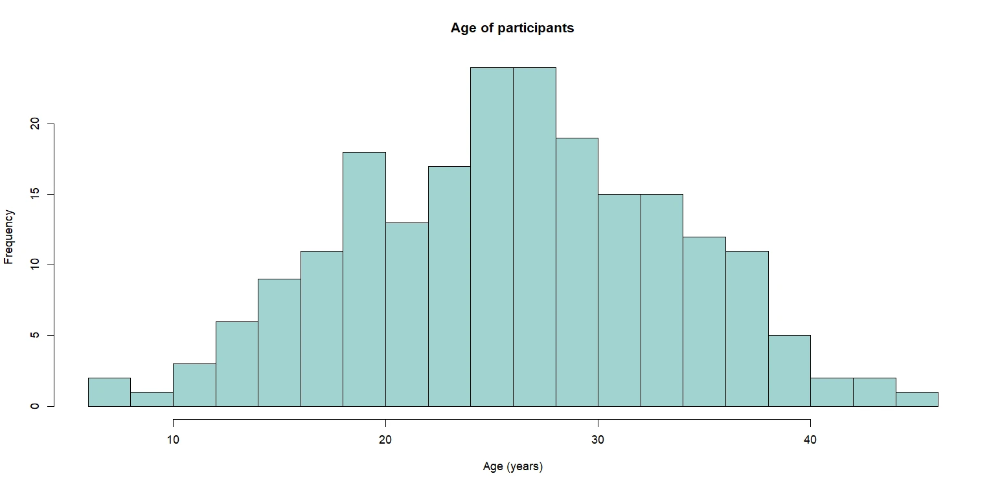
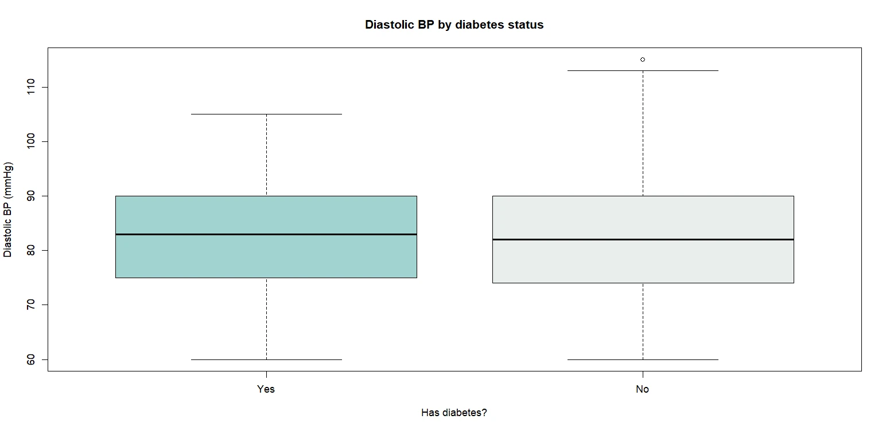
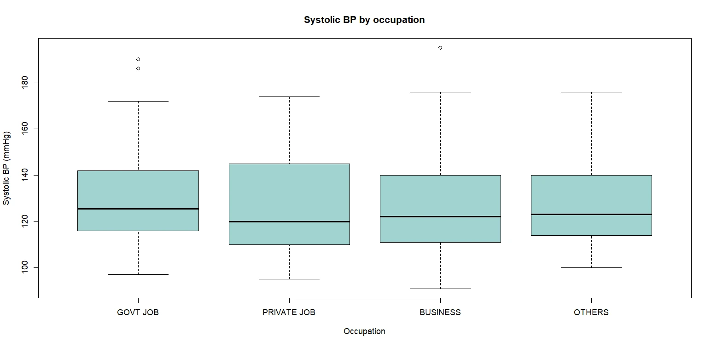

R analysis
Nonparametric Tests Using Health Data
The Unit 8 data activity in R: three questions about 210 participants, answered with descriptive statistics, a Mann-Whitney U test and a Kruskal-Wallis test.
Context
In this activity, I used R to examine health data from 210 participants. The data was supplied as an SPSS .sav file, so I used the haven package to import it into R.
Before beginning the analysis, I checked the dimensions of the dataset, examined the relevant variables, and converted the coded diabetes and occupation variables into labelled factors.
One useful lesson came before the statistical analysis even began. I initially treated the SPSS file as though it needed to be opened directly in RStudio. I learned that the file instead needed to be placed in the RStudio Project folder and imported into an R object using read_sav().
This helped me understand the difference between a data file stored on my computer and a dataset loaded into the R Environment.
I also learned that coded categorical data needs to be checked rather than assumed. In this dataset, diabetes was coded as 1 = Yes and 2 = No. If I had guessed what the numbers represented, I could easily have interpreted the groups incorrectly.
Results at a Glance
| Task | Method | Result | Decision |
|---|---|---|---|
| 1. Participant age | Descriptive statistics | Mean = 26.51, median = 27, mode = 26 | The age distribution was roughly symmetrical |
| 2. Diastolic blood pressure by diabetes status | Mann-Whitney U test | W = 3804.5, p = 0.80 | No statistically significant difference |
| 3. Systolic blood pressure by occupation | Kruskal-Wallis test | H(3) = 0.78, p = 0.85 | No statistically significant difference |
The table provides a brief overview of my results. The following sections explain the method, evidence, and interpretation for each task in more detail.
Task 1: Describing Participant Age
The question
What do the mean, median, and mode tell me about the ages of the 210 participants?
The method and why I used it
This task required descriptive statistics rather than a hypothesis test. I calculated the mean, median, and mode because each provides a slightly different way of identifying a typical participant age.
I also created a histogram to examine the overall shape and spread of the age data.
Key numbers
The results were:
- Mean age: 26.51 years
- Median age: 27 years
- Mode: 26 years
- Number of participants aged 26: 16
- Age range: 6 to 45 years
I initially expected R’s mode() function to calculate the most frequent age. However, it returned "numeric" because R uses mode() to identify the type of data rather than calculate the statistical mode.
I therefore used table() to count the ages and identify the age that appeared most frequently.
Interpretation
The mean, median, and mode are all within approximately one year of one another. The histogram also appears reasonably balanced around the middle.
Taken together, these results suggest that participant age is roughly symmetrical rather than being strongly pulled toward much younger or older values.
Plain-language finding
A typical participant was approximately 26 to 27 years old, and 26 was the most common age in the dataset.

Text description of Figure 1.
The histogram groups ages into two-year bars from 6 to 46. The two tallest bars, for ages 24 to 26 and 26 to 28, each reach a frequency of 24. The bars are low at both ends, with 1 to 3 participants in each of the youngest and oldest bars, and there is no long tail on either side.
Task 2: Diastolic Blood Pressure and Diabetes Status
The question
Is median diastolic blood pressure different between participants with diabetes and participants without diabetes?
The test and why I chose it
I used a Mann-Whitney U test, which R reports as a Wilcoxon rank-sum test.
This test was appropriate because I was comparing two separate groups:
- participants with diabetes
- participants without diabetes
The analysis also indicated that the data was not normally distributed. The Shapiro-Wilk normality test for diastolic blood pressure in the non-diabetic group produced a p-value below 0.05:
W = 0.96409, p = 0.0002865
Because the normality assumption was not met, I chose a rank-based nonparametric test rather than an independent-samples t-test.
Instead of comparing the groups using their means, the Mann-Whitney test ranks the observations from lowest to highest and examines whether one group generally has higher values than the other.
Hypotheses
Null hypothesis, H₀: Diastolic blood pressure has the same distribution and median in participants with and without diabetes.
Alternative hypothesis, H₁: Diastolic blood pressure differs between participants with and without diabetes.
Key numbers
- Participants with diabetes: n = 45
- Median for participants with diabetes: 83 mmHg
- Participants without diabetes: n = 165
- Median for participants without diabetes: 82 mmHg
- Test statistic: W = 3804.5
- p-value: p = 0.7999, reported as p = 0.80
Decision
The p-value of 0.80 is considerably higher than the significance level of 0.05. I therefore failed to reject H₀.
The analysis found no statistically significant difference in diastolic blood pressure between participants with and without diabetes.
This does not prove that the two populations are identical. It means that this sample did not provide sufficient evidence of a difference.
Plain-language finding
The typical diastolic blood pressure was almost the same in the two groups, and the small observed difference could reasonably be explained by normal variation in the sample.

Text description of Figure 2.
Two box plots of diastolic blood pressure in mmHg. For participants with diabetes, the median is 83, the box runs from about 75 to 90 and the whiskers from 60 to 105. For participants without diabetes, the median is 82, the box runs from about 74 to 90 and the whiskers from 60 to 113, with one outlier near 115.
Task 3: Systolic Blood Pressure and Occupation
The question
Does systolic blood pressure differ across the four occupational groups in the dataset?
The test and why I chose it
I used a Kruskal-Wallis test because this task compares systolic blood pressure across four separate occupational groups.
A standard one-way ANOVA compares means and assumes that the group data is approximately normally distributed. The normality checks indicated that systolic blood pressure was not normally distributed across the occupational groups, with Shapiro-Wilk p-values below 0.05.
A rank-based Kruskal-Wallis test was therefore more appropriate. The test ranks all systolic blood pressure values and evaluates whether the ranks are distributed differently across the four groups.
Hypotheses
Null hypothesis, H₀: Systolic blood pressure has the same distribution across all four occupational groups.
Alternative hypothesis, H₁: At least one occupational group has a different systolic blood pressure distribution.
Key numbers
The group results were:
- Government job: median = 125.5 mmHg, n = 60
- Private job: median = 120 mmHg, n = 49
- Business: median = 122 mmHg, n = 49
- Other: median = 123 mmHg, n = 52
The Kruskal-Wallis result was:
- Test statistic: H = 0.77906
- Degrees of freedom: df = 3
- p-value: p = 0.8545
For a concise report, this can be written as:
H(3) = 0.78, p = 0.85
Decision
The p-value of 0.85 is higher than the significance level of 0.05. I therefore failed to reject H₀.
The analysis found no statistically significant difference in systolic blood pressure across the four occupational groups.
Because the overall Kruskal-Wallis test was not significant, there was no justification for conducting additional pairwise comparisons.
Plain-language finding
Although the four occupational groups had slightly different median readings, the differences were small enough that they could reasonably have resulted from normal variation in the sample.

Text description of Figure 3.
Four box plots of systolic blood pressure in mmHg. Government job: median 125.5, box about 116 to 142, with two outliers near 186 and 190. Private job: median 120, box about 110 to 145. Business: median 122, box about 111 to 140, with one outlier near 195. Others: median 123, box about 114 to 140. The lower whiskers end between about 91 and 100, and the upper whiskers between about 172 and 176.
Overall Reflection
This activity reinforced that statistical analysis involves more than running a test and reporting a p-value. I first needed to confirm that R could locate the file, import the SPSS data correctly, identify the required variables, and interpret the category labels accurately.
The diabetes coding was a particularly useful reminder that numbers in a dataset do not always mean what I might initially assume. In this case, 1 represented “Yes” and 2 represented “No.” Checking the labels before interpreting the results prevented a potentially serious error.
I also developed a clearer understanding of what a non-significant result means. Failing to reject a null hypothesis does not prove that the groups are identical. It means that the available data does not provide convincing evidence of a difference.
That distinction matters when statistical findings are communicated to people who might otherwise interpret “not statistically significant” as meaning “exactly the same.”
Script
The R script for this activity, as saved. It reads the Health_Data file, which is not published here.
Source
- University of Essex Online (2026) Health_Data [Dataset]. Supplied in ‘Data Activity 6’, NA_PCOM7E Numerical Analysis, Unit 8. University of Essex Online. Available at: https://www.my-course.co.uk/mod/page/view.php?id=1374031 (Accessed: 21 September 2026).